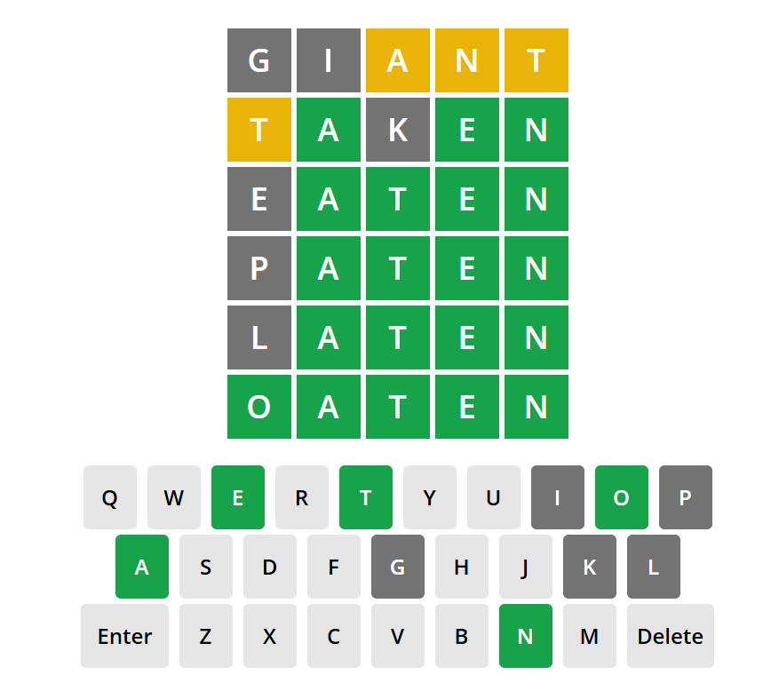

Code
shes_BMI <- shes_2022_data %>%
select(id, age, height_cm_self_adj, weight_kg_self_adj) %>%
mutate(bmi = weight_kg_self_adj / ((height_cm_self_adj / 100) ^ 2))It’s a new session so let’s start fresh. Close down any old script or data tabs, clear out your environment from last time (using the little broom icon), and restart R by going to Session → Restart R
 Follow the starting steps we covered in session 1 to get set up for coding.
Follow the starting steps we covered in session 1 to get set up for coding.
file.list()library(tidyverse)read_csv()For most of this session we will be looking at BMI and Age. Ultimately I’d like us to be able to answer the following questions
How many participants do we have in each BMI categories (i.e. underweight, overweight, obese etc)?
What is the average BMI for different age catagories (i.e. 18-24, 25-34, 35-44 etc)
To do this we’re going to need to learn some more functions, but first lets pull out the variables of interest, put them into a new data object and create a BMI variable.
Write and run the the code to:
Assign the data to a new data object <-.
And then %>%
Select() the variable of interest.
And then %>%
mutate() the BMI variable.
shes_BMI <- shes_2022_data %>%
select(id, age, height_cm_self_adj, weight_kg_self_adj) %>%
mutate(bmi = weight_kg_self_adj / ((height_cm_self_adj / 100) ^ 2))The best way to write the above code is to go back to yesterday’s code and copy that (adding in age). No need to write this all out again, this is why we save our code!
And this is also the secret reason why I wrote this handbook. All this knowledge doesn’t just live in my head, I just know where to find it when I need it. And now I have a searchable book of my code.
 The book also has a dark mode this year. The little button under the title on the left. I spent far to long getting it to work and look good but I think it was worth it.
The book also has a dark mode this year. The little button under the title on the left. I spent far to long getting it to work and look good but I think it was worth it.
The NHS will typically band BMI into categories. This gives a quick, standardised way to classify adult weight status so services can screen for risk, monitor population health, and use consistent thresholds (underweight, healthy range, overweight, obesity, and severe obesity). More can be found about there approach on their website here: NHSinform
And this is the section that is of most interest to us:

We can use these ranges to label our date accordingly.
In order to do this we will need our mutate() function again, this time with a case_when() function inside the mutate() function to help us with the re-coding.
This process will also introduce you to the concept of logical operators. For this example we will use >, <, >=, <=, and &. Read through the code below, line-by-line, and see if you can work out what they, and ~ each mean in this context.
shes_bmi_age <- shes_bmi_age %>%
mutate(bmi_band = case_when(bmi < 18.5 ~ "underweight",
bmi >= 18.5 & bmi < 25 ~ "healthy range",
bmi >= 25 & bmi < 30 ~ "overweight",
bmi >= 30 & bmi < 40 ~ "obesity",
bmi >= 40 ~ "severe obesity",
TRUE ~ NA_character_))The function case_when() reads top-to-bottom. It always end with a TRUE ~ NA_character_, this catches all of the values that don’t fit with the above, and in this case we want them to read as NA.
NA means “missing/unknown”. Many functions in R return NA if any input is missing, unless you explicitly tell them to ignore missing values.
If you hit an error in the early days of your coding journey, it’s likely due to not taking into account of NAs in your dataset. I’ve done a fair amount of cleaning to this dataset but you’ll still be seeing NA across various variables.
In fact here is a map of the missing data in your full dataset (created with the navier package)

Due to the way the questions are asked in this survey, there isn’t a single participant that has data for all of these questions. This causes an issue with some of the calculations that want to use data from all participants (e.g. calculating a mean). To tell R that you want to remove NA’s from your analysis you can often add the code na.rm = TRUE to your function.
I recommend noting down na.rm = TRUE now as this was something that stumped me many times when I was first learning R.
To answer our first question, set out at the top of this session, we can run the following code.
shes_bmi_age %>%
group_by(bmi_band) %>%
summarise(n = n())Notice that for this code we did not assign to another variable and when run it just appears in the console.
 This is the kind of code I run when I’m exploring a dataset for the first time. This expression specifically (
This is the kind of code I run when I’m exploring a dataset for the first time. This expression specifically (group_by(variable name), summarise(n = n())) is is an incredibly common one, especially in a dataset like this with lots of categorical variables. Its a quick way to get a sense of how much data we have for each variable.
Try this code on the original imported dataset and see if you can answer the following questions. You may want to have the codebook open for the correct variable names.
How many of our participants have an undergraduate degree or higher?
How many of our participants live in a rural setting?
How many of our participants did not receive a COVID-19 vaccine?
How many of our participants are carers of 50+ hours a week?
After exploring the data its often best to delete your code chunks and just keep your script to the transformations that you preform. Mainly just to reduce clutter
Our second question outlined at the start of the session was to find out the average BMI for different age categories.
The first step of doing this would be to code to age boundaries. We could pick any groupings of age that we’re interested in, but to make sure we all get the same answers lets go with the following four categories: 18–29, 30–44, 45–64, and 65+
Go ahead and add a new variable to your shes_bmi_age data object called age_band using an adapted version of the mutate() and case_when() code from above.
shes_bmi_age <- shes_bmi_age %>%
mutate(age_band = case_when(age < 30 ~ "18–29",
age >= 30 & age < 45 ~ "30–44",
age >= 45 & age < 65 ~ "45–64",
age >= 65 ~ "65+",
TRUE ~ NA_character_))Note the use of quotation marks around the catagogy names even though they are numbers (e.g. “18-19”) this forces the number data into categorical data
When you check your variable afterwards (using the group_by() and summarise(n = n ()) code you should get the following numbers. If not make sure to check your logical operators.
 Next we’re going to adapt our
Next we’re going to adapt our summarise() code so that instead of giving us count it takes the mean of a variable and gives us the standard deviation.
For the mean() and sd() functions to work we need to tell them to ignore all of the missing data in the BMI variable (n = 2731 cases) we do this by adding the na.rm = TRUE argument to the expression.
shes_bmi_age %>%
group_by(age_band) %>%
summarise(mean = mean(bmi, na.rm = TRUE),
sd = sd(bmi, na.rm = TRUE))The first “mean” and “sd” are actually variable names so the following will run just the same. However the mean() and sd() after the equals sign are functions so they need to be the exact notation to work.
shes_bmi_age %>%
group_by(age_band) %>%
summarise(average = mean(bmi, na.rm = TRUE),
std_dev = sd(bmi, na.rm = TRUE))You may also get confused between summarise() and summary(). summary() is useful and we’ll come back to it in session 4 when we look at statistical modeling but it doesn’t give us what we need for this question.
Run the following and you’ll see what I mean.
summary(shes_bmi_age)According to our output the average of each of our age bands sits in which of the NHS categories?
18-29:
30-44:
45-64:
65+:
To finish today, we’ll practice keeping only the rows we want using the filter() function.
Think of the function as saying “take the data, and keep the rows where this condition is TRUE.”
For this we will need to use logical operators again. The blue box gives a full list and explanation of each.
> (Greater Than): This operator returns TRUE if the value on its left is greater than the value on its right. For example, filter(Age > 18) would keep only the rows where Age is greater than 18.
< (Less Than): This operator returns TRUE if the value on its left is less than the value on its right. For example, filter(Age < 18) would keep only the rows where Age is less than 18.
>= (Greater Than or Equal To): This operator returns TRUE if the value on its left is greater than or equal to the value on its right. For example, filter(Age >= 18) would keep only the rows where Age is 18 or older.
<= (Less Than or Equal To): This operator returns TRUE if the value on its left is less than or equal to the value on its right. For example, filter(Age <= 18) would keep only the rows where Age is 18 or younger.
== (Equal To): This operator returns TRUE if the value on its left is equal to the value on its right. For example, filter(Age == 18) would keep only the rows where Age is exactly 18. A common mistake here is to use just one equals sign. So common in fact that there is a tailored error message that read “did you mean ==?” when used incorrectly.
& (AND): This operator returns TRUE if both its left and right operands are TRUE. For example, filter(Age > 18 & Income > 50000) would keep only the rows where the age is greater than 18 AND the variable Income is greater than 50,000.
| (OR): This operator returns TRUE if either (or both) of its operands are TRUE. For example, filter(Age < 18 | Income > 50000) would keep rows where the age is less than 18 OR the income is greater than 50,000.
! (NOT): This operator negates the truth value of its operand. For example, filter(!is.na(Age)) would keep only the rows where Age is not NA.
!= (Not Equal To): This operator returns TRUE if the value on its left is not equal to the value on its right. For example, filter(Age != 18) would keep all the rows where Age is not 18.
For categorical variables the same rules apply (although you’ll not be using any of the greater than or less than symbols). You will need to put quotation marks around your category name e.g. filter(gender == "non binary")
Here is an example using your dataset.
# Create a dataset with participants aged 45–64 who meet the UK Chief Medical Officer physical-activity guidelines
filtered_data1 <- shes_2022_data %>%
filter((age >=45 & age <64) & pa_summary_cmo2011_time == "Meets recommendations") See if you can adapt the code to create new data sets for the following, to check that you’ve run these correctly report the number of observation (obs, i.e. number of rows or participants in this case) from the environment window for the boxes provided. For instance the number of obs from the above filter is 905. You will need the codebook for this task
How many participants are current smokers or people with serum cotinine ≥ 10 ng/mL?
How many participants report ever being diagnosed with diabetes and also report that they are not current experiencing chronic pain?
How many participants under the age of 30 received at least one COVID-19 vaccine?
filtered_data2 <- shes_2022_data %>%
filter(current_smoker == "Current cigarette smoker" |
serum_cotinine_ng_ml >= 10)
# answer = 633
filtered_data3 <- shes_2022_data %>%
filter(diabetes == "Yes" &
chronic_pain == "Not currently experiencing chronic pain")
# answer = 99
filtered_data4 <- shes_2022_data %>%
filter(age < 30 &
covid_vax_received == "Yes")
# answer = 508There is one more variable that we didn’t calculate in the last session and that’s blood pressure.
Participants in this study had their blood pressure taken using the auscultatory method twice in the study with each time giving a systolic and a diastolic value leading to four variables in your dataset (bp_sys_omron_r3_mmhg, bp_sys_omron_r4_mmhg, bp_dia_omron_r3_mmhg, and bp_dia_omron_r4_mmhg). There is also a variable that gives an indication of if the measurement should be taken as valid bp_series_valid_code
Follow the steps below using code from last session and this session.
id, age, and all of the blood pressure variables mentioned above.sys and dia variables respectively.\[ \mathrm{MAP} = \frac{\mathrm{SBP} + 2\,\mathrm{DBP}}{3} \] Here it is the formula in code (because I’m kind and not going to make you work out maths!)
map = (systolic + (2 * diastolic)) / 318–29
30–44
45–64
65+
# Session 2 - Exercise 1
# this code selects the data
shes_bp_age <- shes_2022_data %>%
select(id, age, bp_sys_omron_r3_mmhg, bp_sys_omron_r4_mmhg,
bp_dia_omron_r3_mmhg, bp_dia_omron_r4_mmhg,
bp_series_valid_code)
# this code filters to include only valid measurements
shes_bp_age_valid <- shes_bp_age %>%
filter(bp_series_valid_code == "Valid blood pressure measurement")
# this code takes an average of the sys and dia readings
shes_bp_age_valid <- shes_bp_age_valid %>%
mutate(systolic = ((bp_sys_omron_r3_mmhg + bp_sys_omron_r4_mmhg)/2),
diastolic = ((bp_dia_omron_r3_mmhg + bp_dia_omron_r4_mmhg)/2))
# this code calculates Mean Arterial Pressure ()
shes_bp_age_valid <- shes_bp_age_valid %>%
mutate(map = (systolic + (2 * diastolic)) / 3)
# this code creates the age bands
shes_bp_age_valid <- shes_bp_age_valid %>%
mutate(age_band = case_when(age < 30 ~ "18–29",
age >= 30 & age < 45 ~ "30–44",
age >= 45 & age < 65 ~ "45–64",
age >= 65 ~ "65+",
TRUE ~ NA_character_))
# this code give the average MPA per age bracket
shes_bp_age_valid %>%
group_by(age_band)%>%
summarise(average_MPA = mean(map))Note: This is also how I often annotate my code so that future me knows what each expression does.
And if I’m feeling especially fancy I’ll put all my transformation into a single neat expression.
shes_bp_age <- shes_2022_data %>%
select(id, age, bp_sys_omron_r3_mmhg, bp_sys_omron_r4_mmhg,
bp_dia_omron_r3_mmhg, bp_dia_omron_r4_mmhg,
bp_series_valid_code) %>%
filter(bp_series_valid_code == "Valid blood pressure measurement") %>%
mutate(systolic = ((bp_sys_omron_r3_mmhg + bp_sys_omron_r4_mmhg)/2),
diastolic = ((bp_dia_omron_r3_mmhg + bp_dia_omron_r4_mmhg)/2),
map = (systolic + (2 * diastolic)) / 3) %>%
mutate(age_band = case_when(age < 30 ~ "18–29",
age >= 30 & age < 45 ~ "30–44",
age >= 45 & age < 65 ~ "45–64",
age >= 65 ~ "65+",
TRUE ~ NA_character_))
shes_bp_age_valid %>%
group_by(age_band)%>%
summarise(average_MPA = mean(map))A good habit to get into is to save your code, clear your environment restart R and run you code from line 1 to the end. If so, well done! Annotate it and save it for later.
Note: Only for the R obsessives, only for fun, not necessary for your assignment
I’m dyslexic, and as such word games like The Wordle have always been a nightmare for me.
Not to be deterred last year I decided to complete The Wordle.
Here is an version of wordle that lets you play as many times as you like
See if you can beat it by adapting my code.
This code starts by reading in data that a nice nerd had uploaded to their github. It contains a list of 12972 five letter words, there frequency in the English language, and what day they previously appeared in the official NYT wordle. I then separate each word into five variables one for each letter. Then its just a case of filtering based on the feedback from the app.
Below the code you’ll see how this game went.
library(tidyverse)
# for the example I'm running through the answer ended up as: "oaten"
new_col_names <- paste0("letter", 1:5)
wordle <- read_csv("https://raw.githubusercontent.com/steve-kasica/wordle-words/master/wordle.csv") %>%
mutate(word_5 = word) %>%
separate(col = word, into = new_col_names, sep = "(?<=.)(?=.)")
# Lets start with the word "giant"
# list all grey letters for all letter positions
# I had the "g", "i" come back as grey
guess2 <- wordle %>%
filter(!(letter1 %in% c("g", "i"))) %>%
filter(!(letter2 %in% c("g", "i"))) %>%
filter(!(letter3 %in% c("g", "i"))) %>%
filter(!(letter4 %in% c("g", "i"))) %>%
filter(!(letter5 %in% c("g", "i")))
# list all orange letters for all positions other than the position found
# then the position where orange letters are found in a second filter
# I had an orange "a", "n", "t" in position 3,4,5.
guess2 <- guess2 %>%
filter(letter3 != "a" &
(letter1 == "a" | letter2 == "a" | letter4 == "a" | letter5 == "a"),
letter4 != "n" &
(letter1 == "n" | letter2 == "n" | letter3 == "n" | letter5 == "n"),
letter5 != "t" &
(letter1 == "t" | letter2 == "t" | letter3 == "t" | letter4 == "t"))
# filter for where the green letters are
# I have no green letters but if i did i'd use this code
#guess2 <- guess2 %>%
#filter(letterX == "?")
# guess 2
guess2 %>%
arrange(desc(occurrence)) %>% # ordered by their frequency
slice(1:5) # 1-5 so I have some options
# next word suggestion is "taken"
# this gives me and grey "k"
# a orange "t" in position 1
# and three greens the "a" "e" "n" positions 2,4,5
# restart the loop again
# grey
guess3 <- guess2 %>%
filter(!(letter1 %in% c("g", "i", "k"))) %>%
filter(!(letter2 %in% c("g", "i", "k"))) %>%
filter(!(letter3 %in% c("g", "i", "k"))) %>%
filter(!(letter4 %in% c("g", "i", "k"))) %>%
filter(!(letter5 %in% c("g", "i", "k")))
# orange
guess3 <- guess3 %>%
filter(letter1 != "t" &
(letter2 == "t" | letter3 == "t" | letter4 == "t" | letter5 == "t"))
# still no green so move the guess code
guess3 <- guess3 %>%
filter(letter2 == "a" &
letter4 == "e" &
letter5 == "n")
guess3 %>%
arrange(desc(occurrence)) %>% # ordered by their frequency
slice(1:5) # 1-5 so I have some options
# only 4 options left now, most common being eaten but annoyingly its oaten.
# well I'm still counting that as a win